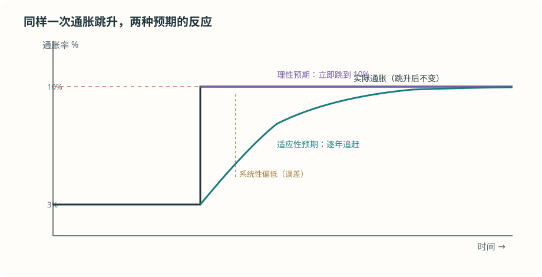

预期与宏观经济学
开车的比喻：只看后视镜无法安全驾驶，只看挡风玻璃同样不行。宏观经济学过去半个世纪最重要的转变，就是承认人们会“向前看”、会根据政策调整自己的预期。从适应性预期到理性预期，从卢卡斯批判到央行独立性，看预期如何成为政策的核心变量。
适应性预期：用“后视镜”开车
适应性预期（adaptive expectations）的逻辑是“用过去推断未来”：如果今年通胀是 5%，就预期明年的通胀“大约还是 5%”；实际出现偏差时，再按比例修正预期。它在 1950–1960 年代被 Cagan、Friedman 等广泛使用——弗里德曼解释菲利普斯曲线时就靠它：短期内工人可能被未预期到的通胀“愚弄”，长期则逐步调高预期，失业回到自然率。
它的致命缺陷是：允许系统性的预测错误持续存在。若通胀从 3% 跳到 10% 并保持不变，适应性预期需要数年才“追上”现实，期间预期一直系统性偏低——这给政策制定者留下了“系统性欺骗”的空间。

演算：适应性预期要多少年才追上现实？
把实际通胀固定在某个水平，改变调整速度 λ 与初始预期，看预期路径如何逐年逼近。所有数值为构造演算，不对应任何真实经济体的历史数据。
理性预期：无法被系统性地欺骗
1961 年，Muth 在《理性预期与价格变动理论》中提出一个极其简洁的想法：人们会不会比适应性预期更聪明？如果你知道政策制定者有制造通胀的倾向，为什么还会年复一年地犯同样方向的错误？
理性预期的定义是：经济主体利用所有可得信息形成预期，因此预期误差是随机的、均值为零——没有系统性偏差。它不是“每个人都能预知未来”，而是说：你无法持续、系统地欺骗公众；偶然猜对或猜错可以，年复一年的同方向错误不行。
1970 年代，卢卡斯把理性预期与新古典假设（市场出清、价格与工资灵活）结合，发展出新古典宏观经济学，并给出政策无效性命题：若预期是理性的且价格灵活，任何被预期到的货币政策都无法影响实际产出与就业，只会改变价格水平；只有未被预期到的“意外”才有效，而意外在长期中是随机的，不可能被系统性利用。
卢卡斯批判：为什么历史参数会变
1976 年，卢卡斯发表《经济计量政策评价：一个批判》。当时主流做法是用大规模宏观计量模型评估政策效果：模型里的参数（如边际消费倾向、货币需求弹性）都是从历史数据估计出来的，然后用它们预测“减税对 GDP 的影响”。
卢卡斯指出：这些历史参数都是在当时政策环境下人们的最优反应。一旦改变政策，人们的最优反应也会变，参数随之改变。用不变的历史参数去预测政策变动后的世界，方法论上就不成立。
| 方面 | 批判之前 | 批判之后 |
|---|---|---|
| 模型基础 | 统计拟合变量关系（约化形式） | 从个体最优行为推导（结构形式） |
| 参数含义 | 固定的统计相关系数 | 由政策环境决定的“深度参数” |
| 政策评价 | 把历史数据代入模型推算 | 考虑政策变化后行为参数的改变 |
| 对 IS-LM 的态度 | 核心分析框架 | 参数不稳定、缺乏微观基础 |
时间不一致性与央行独立性
1977 年，Kydland 与 Prescott（即上一章 RBC 的奠基人）发表《规则而非相机抉择》，提出时间不一致性（time inconsistency）：今天的最优计划，到明天可能就不最优了。
设想央行宣布“通胀目标 2%、不会用意外通胀刺激就业”，公众相信并以此签工资合同。合同签完后，央行发现一个诱惑：制造约 5% 的通胀可以压低实际工资、暂时增加就业。但公众不是傻瓜，他们预期到这种动机，一开始就不信 2% 的承诺，要求更高的通胀补偿。结果被迫接受“高通胀 + 自然失业率”的组合——这就是通胀偏差（inflation bias）：试图“欺骗”的成本，最终以更高的均衡通胀体现。
解法是用规则代替相机抉择：把货币政策交给以价格稳定为目标的独立央行，并用法律明确职责。这就是央行独立性与通胀目标制的理念。1990 年代起，新西兰、加拿大、英国、瑞典等先后引入通胀目标制——这一制度变革是历史事实，但其对各国通胀结果的贡献需结合具体时期与其他因素评估，不能当作单一因果系数。
前瞻指引与预期管理
既然公众会根据对未来的预期做今天的决策，央行能不能通过“说”来影响经济，而不必真的“做”？这就是前瞻指引（forward guidance）：央行就未来的货币政策路径向公众提供信息。它从弱到强有三种形式：定指引（“相当长一段时间保持宽松”）、时间指引（“2023 年底前不加息”）、状态指引（“失业率降至 6.5% 以下前不加息”）。
它为何有效？因为长期利率主要由市场对未来短期利率路径的预期决定。若央行能让市场相信“未来几年都不会加息”，长期利率就会保持在低位——哪怕央行一天债券也没买，它已经实现了某种“降息”。
| 工具 | 预期管理机制 | 特点与边界 |
|---|---|---|
| 政策利率 | 通过利率信号传递政策意图 | 直接，但有零下限约束 |
| 前瞻指引 | 告知未来政策路径，影响长期利率预期 | 零下限下仍有效，不需实际动用工具 |
| 量化宽松 | 购买资产压低长端利率并传递决心 | 信号效应可能比实际购买更重要 |
| 通胀目标 | 锚定长期通胀预期，防止自我实现通缩 | 建立信用，减少时间不一致性 |
把整章连起：预期不是经济学的配角。没有理性预期的洞见，就没有独立央行；没有时间不一致性的分析，就没有通胀目标制；没有对预期管理的理解，就没有前瞻指引与量化宽松这些非常规工具。这些线索将在下一章的 DSGE 框架中统一起来。
来源与阅读
本章的概念与历史制度均给出出处；交互图表中的数值为构造示例，不对应任何真实经济体的历史序列。
- Muth, J. (1961). Rational Expectations and the Theory of Price Movements. Econometrica
- Lucas, R. (1976). Econometric Policy Evaluation: A Critique. Carnegie-Rochester Series
- Kydland, F. & Prescott, E. (1977). Rules Rather than Discretion. Journal of Monetary Economics
- Lucas, R. (1972). Expectations and the Neutrality of Money. JET（政策无效性相关）
- 美联储 · 货币政策与前瞻指引（官方政策声明）
- 国际清算银行（BIS）· 通胀目标制与央行治理综述